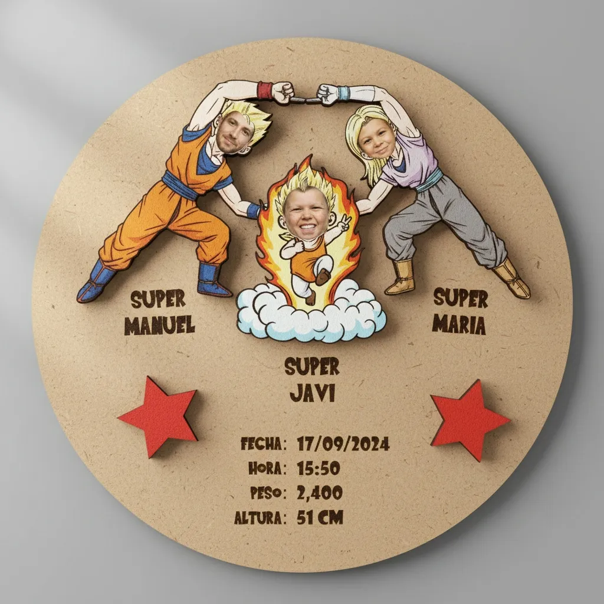
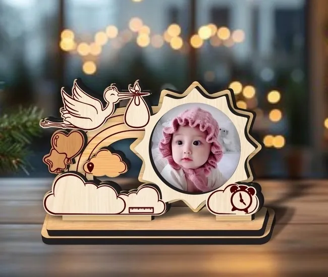
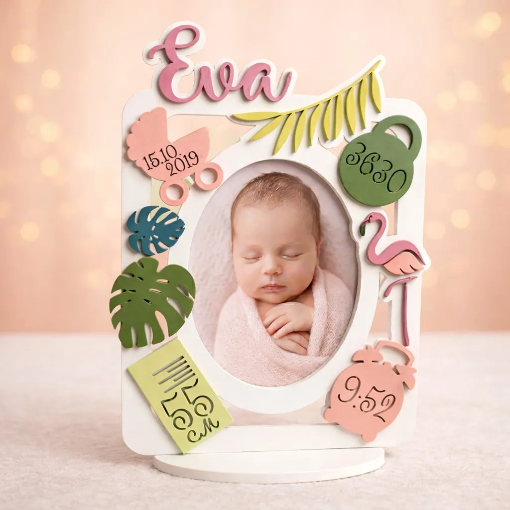

Modelos Disponibles
Diseños 100% personalizados para dar la bienvenida al nuevo miembro de la familia
Diseño Nube
Nombre, fecha, hora, peso y talla grabados en madera con espacio destinado para foto del bebé.

Diseño DragonBall
¡FUUU-SIÓN... YA! El resultado más perfecto y poderoso de la unión de papá y mamá, inmortalizado en un diseño de su anime favorito.

Diseño Sobremesa
Formato elegante, compacto y sutil. Su pequeño tamaño permite integrarlo a la perfección en cualquier espacio o mesita.

Diseño Doble Marco
Diseño fotográfico destacado. Viene preparado tanto para colgar en pared como con peana de apoyo para sobremesa a elección del cliente.

Diseño Flora
Tamaño grande y llamativo con decoración floral grabada. Viene preparado con peana de apoyo o para colgar según se prefiera.